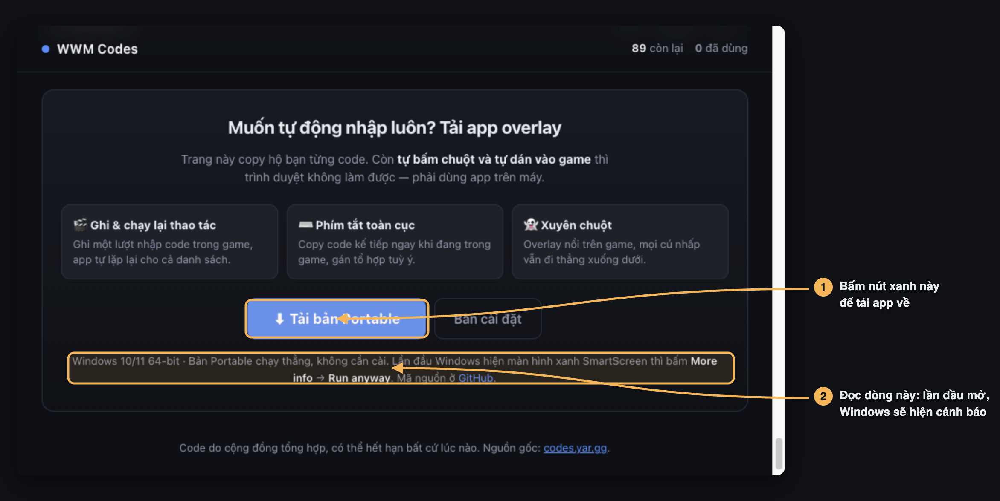
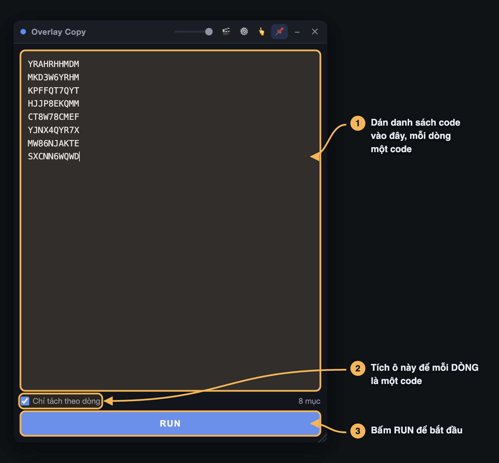
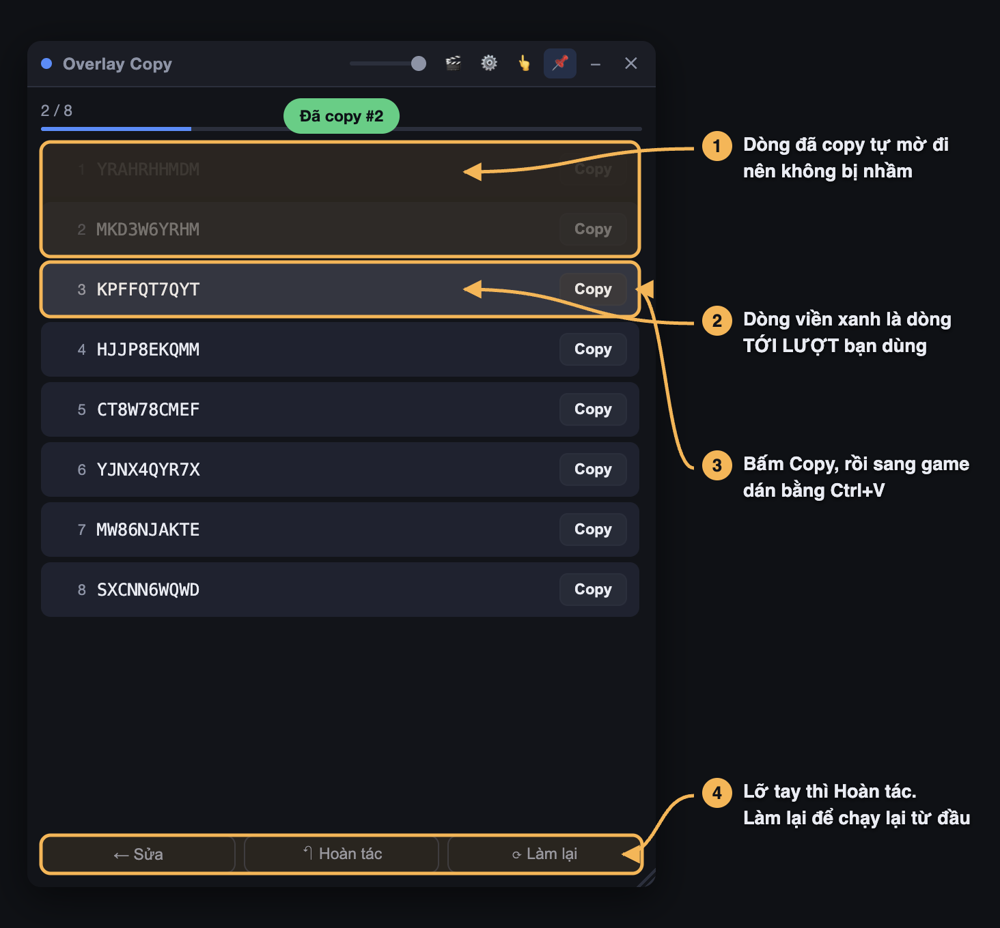
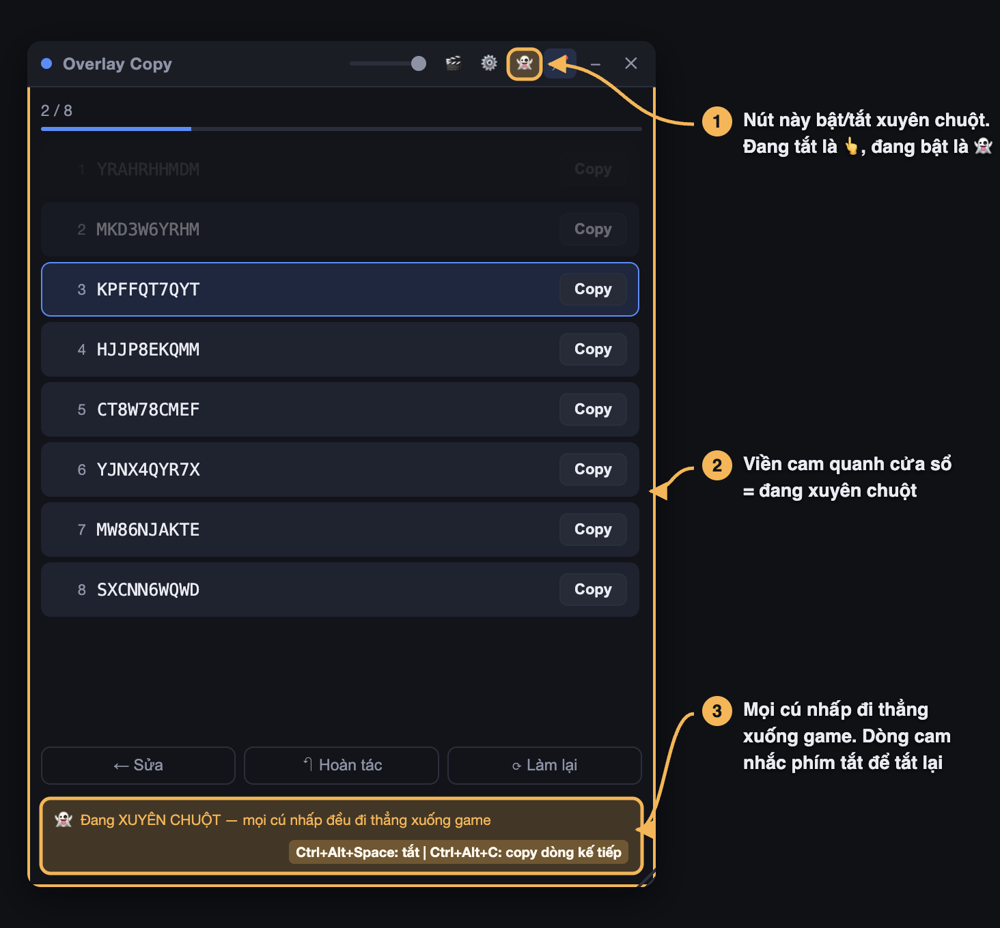
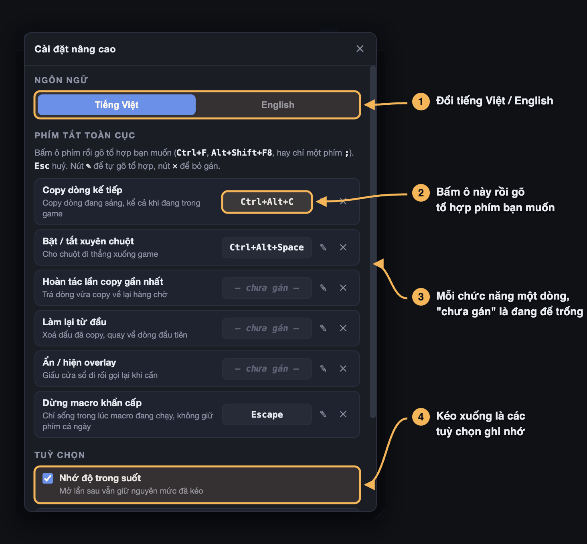
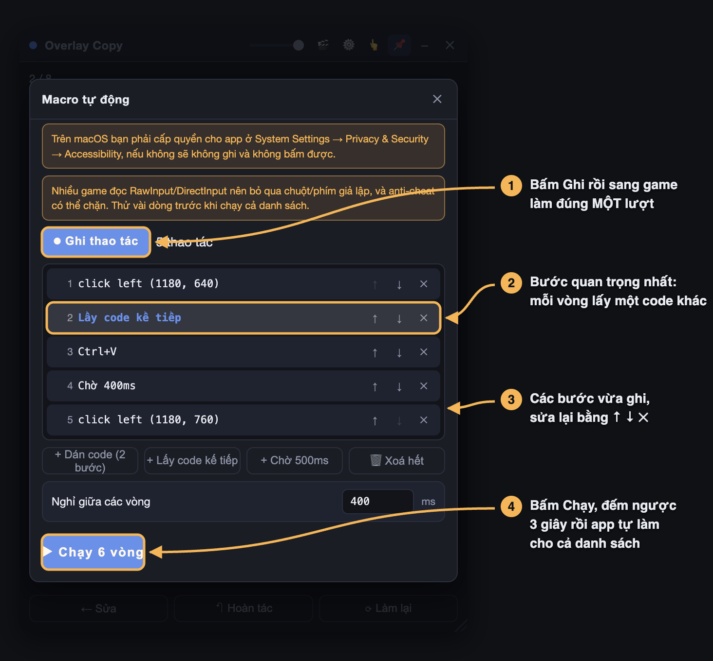

Hướng dẫn dùng app Overlay Copy
Dành cho người chưa từng cài phần mềm ngoài. Làm theo đúng thứ tự là chạy được.
Cần: máy Windows 10 hoặc 11, bản 64-bit. Không cần cài thêm gì khác.
1 Tải app về máy
Kéo xuống cuối trang code, tìm khung “Muốn tự động nhập luôn?” rồi bấm nút xanh.

Bản Portable — nên chọn cái này. Tải về là chạy được ngay, không cài đặt, để đâu cũng được, kể cả USB. Xoá đi là sạch, không để lại gì trong máy.
Bản cài đặt — cài hẳn vào máy, có sẵn shortcut ngoài Desktop và trong Start Menu.
File nặng khoảng 87 MB nên tải hơi lâu, cứ để yên cho nó chạy xong.
2 Mở app lần đầu
2.1. Bỏ khoá file
File tải từ mạng về hay bị Windows đánh dấu “không tin cậy”. Bỏ dấu này trước cho đỡ vướng:
- Chuột phải vào file vừa tải → chọn Properties
- Nhìn xuống cuối cùng của thẻ General, nếu thấy ô Unblock thì tích vào
- Bấm OK
Không thấy ô Unblock cũng bình thường — bỏ qua, đi tiếp.
2.2. Vượt màn hình xanh SmartScreen
Nháy đúp vào file. Vì file chưa mua chữ ký số (khoảng vài trăm đô một năm) nên Windows sẽ chặn bằng một màn hình xanh:
Microsoft Defender SmartScreen prevented an unrecognized app from starting. Running this app might put your PC at risk.
More info✓ Chỉ bị hỏi đúng lần đầu. Từ lần sau nháy đúp là chạy thẳng.
Lần đầu chờ khoảng 5–10 giây để app tự giải nén. Cửa sổ sẽ hiện ra ở góc trên bên phải màn hình.
3 Nhập danh sách code
Quay lại trang code, bấm ⚡ Tạo overlay → Toàn bộ code còn hạn, rồi copy các code sang app. Hoặc dán danh sách của riêng bạn.

Không tích thì app cắt theo dấu cách, code nào có khoảng trắng sẽ bị vỡ làm đôi. Tích vào là mỗi dòng bạn xuống hàng thành đúng một code.
4 Copy từng dòng
Bấm RUN, danh sách hiện ra và được đánh số. Đây là màn hình bạn sẽ nhìn suốt lúc nhập code.

Cách làm thực tế: bấm Copy → sang cửa sổ game → dán bằng Ctrl + V → quay lại bấm Copy dòng tiếp theo. App tự làm mờ dòng vừa xong và sáng dòng kế tiếp nên không bao giờ bị lạc chỗ.
Copy hết thì hiện khung xanh DONE ✓.
5 Xuyên chuột — khi overlay che mất game
Overlay nổi đè lên game, nên mỗi lần bạn nhấp vào vùng của nó thì game không nhận được cú nhấp đó. Bật xuyên chuột là xong.

Kể cả nút tắt. Phải dùng phím tắt — mặc định:
| Ctrl + Alt + Space | Bật / tắt xuyên chuột |
| Ctrl + Alt + C | Copy dòng kế tiếp, chạy cả khi đang trong game |
6 Đổi phím tắt cho dễ bấm
Thấy tổ hợp ba nút khó bấm, hoặc game của bạn đã dùng sẵn tổ hợp đó? Bấm nút ⚙️ trên thanh tiêu đề.

Cách gán: bấm vào ô phím → ô nhấp nháy và hiện Gõ phím... → gõ tổ hợp bạn muốn. Nhận Ctrl+F, F8, phím mũi tên, phím numpad, hoặc chỉ một phím ;. Bấm Esc để huỷ.
Gán một phím đơn như ; thì app giữ phím đó trên toàn máy. Lúc app đang chạy, bạn gõ ; ở Word hay trình duyệt cũng sẽ không ra ký tự. Rất tiện khi chơi game, nhưng nhớ tắt app khi cần gõ văn bản.
Nếu tổ hợp đang bị app khác giữ, app báo đỏ và tự quay về phím cũ — bạn không bị mất phím tắt.
7 Macro — để app tự nhập hộ
Thay vì tự bấm từng code, bạn dạy app làm một lượt rồi nó tự lặp lại cho cả danh sách. Bấm nút 🎬.

Làm theo thứ tự này
- Nhập code và bấm RUN trước, để có danh sách chờ.
- Bấm 🎬 → ⏺ Ghi thao tác. Nút chuyển sang màu đỏ.
- Sang cửa sổ game, làm đúng một lượt: nhấp vào ô nhập code → Ctrl+V → nhấp nút xác nhận.
- Quay lại bấm ⏹ Dừng ghi.
- Bấm ▶ Chạy N vòng. App đếm ngược 3 giây — tranh thủ chuyển sang cửa sổ game.
Đây là bước khiến mỗi vòng dán một code khác nhau. Khi bạn bấm Ctrl+V lúc ghi, app tự chèn bước này ngay trước đó.
Nếu không thấy nó trong danh sách (ví dụ bạn dán bằng chuột phải → Paste), cứ bấm nút + Dán code (2 bước) rồi dùng ↑ ↓ kéo vào đúng chỗ.
🛑 Dừng gấp: bấm Esc. Phím này chỉ có tác dụng lúc macro đang chạy nên không chiếm phím Esc của bạn lúc bình thường.
1. Không phải game nào cũng ăn. Nhiều game đọc chuột/phím theo kiểu RawInput hoặc DirectInput nên bỏ qua hoàn toàn thao tác giả lập, và các hệ anti-cheat có thể chặn hoặc đánh dấu. Hãy thử 2–3 dòng trước khi chạy cả trăm dòng.
2. Toạ độ ghi theo pixel màn hình. Đổi độ phân giải, đổi cửa sổ/fullscreen, hay di chuyển cửa sổ game thì phải ghi lại macro.
3. Antivirus dễ báo nhầm. App phải móc hook bàn phím toàn cục để ghi thao tác, nên Defender hoặc Avast có thể cảnh báo mạnh hơn bình thường.
8 Gặp lỗi thì làm gì
| Hiện tượng | Cách xử lý |
|---|---|
| Nháy đúp mà không thấy gì | Mở Task Manager (Ctrl+Shift+Esc), tìm tiến trình Overlay Copy. Nếu có mà không thấy cửa sổ thì nó đang nằm ngoài vùng nhìn thấy do vừa đổi độ phân giải — kết thúc tiến trình rồi mở lại. |
| Báo “This app can't run on your PC” | Máy đang chạy Windows 32-bit hoặc chip ARM. Bản này chỉ chạy trên x64. |
| Lỡ bật xuyên chuột mà không tắt được | Bấm Ctrl+Alt+Space. Vẫn không được thì mở Task Manager kết thúc tiến trình rồi mở lại. |
| Bấm phím tắt mà không copy | Kiểm tra app còn chạy không, và đã bấm RUN chưa. Vẫn không ăn thì tổ hợp đã bị app khác chiếm — vào ⚙️ đổi sang tổ hợp khác. |
| Macro chạy nhưng game không nhận | Game của bạn thuộc loại bỏ qua thao tác giả lập. Không có cách khắc phục từ phía app — quay về dùng phím tắt copy rồi tự dán. |
| Nút ▶ Chạy bị mờ, ghi 0 vòng | Chưa có dòng nào trong hàng chờ. Đóng bảng macro, dán code vào ô nhập rồi bấm RUN, sau đó quay lại. |
| Antivirus xoá mất file | Thêm file vào danh sách loại trừ: Windows Security → Virus & threat protection → Manage settings → Exclusions → Add an exclusion → File. |
Vẫn vướng chỗ nào? Mở issue ở GitHub.
← Về trang danh sách code